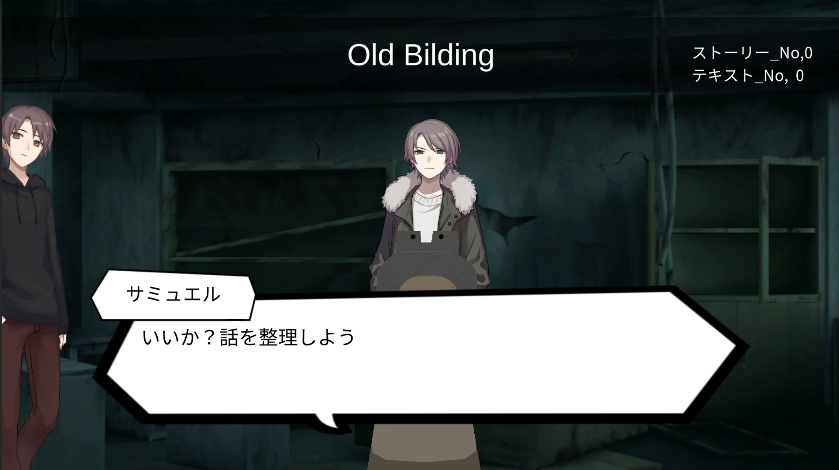
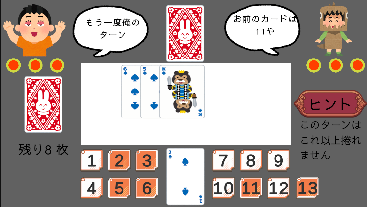
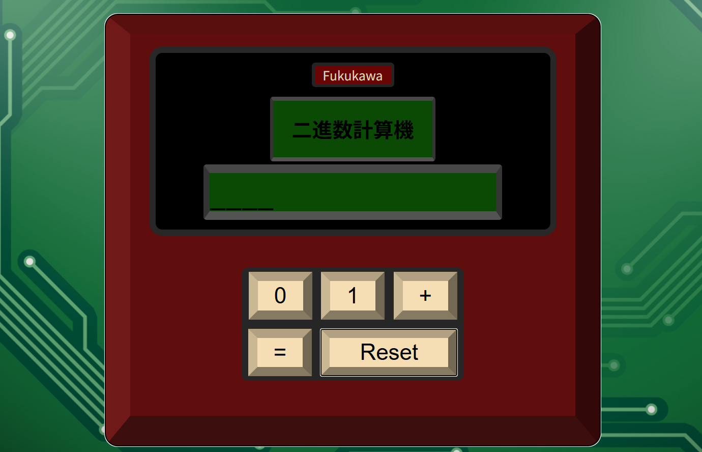
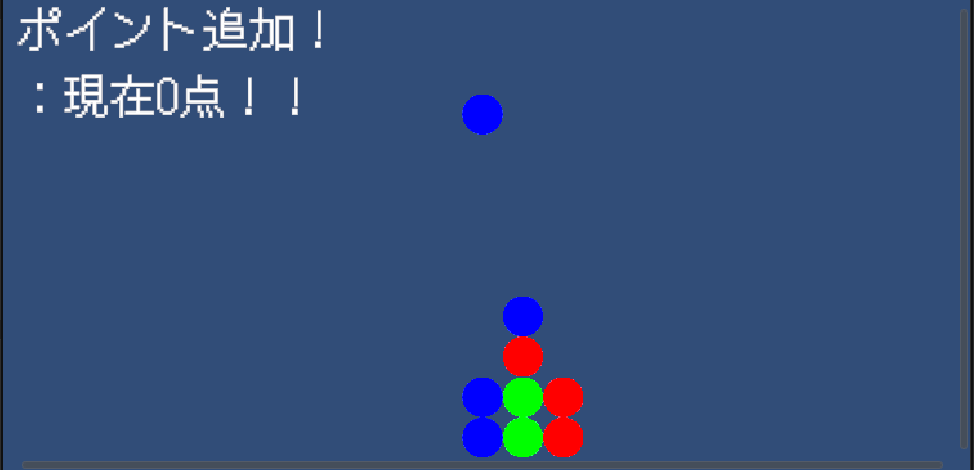

.jpg)
.jpg)
.jpg)
.jpg)
.jpg)
.jpg)
25歳の無職。
就労移行支援事業所リンクス大宮に通いながらゲームの制作や資格勉強などをしています。
好きなゲームは"NeedyGirlOverDose"
好きな映画は"怖すぎ!! シリーズ"の河童
好きな漫画は"なるたる"
なんかいい感じの
標語を入れる
About
Kimimasa Fukukawa
Work
-

TGKE
-

数字当てゲーム
-

２進数計算機
-

ぷよぷよ風パズルゲーム
-
にゃんこ大戦争風ストラテジーゲーム
タイトルをクリックすると詳細が表示されるよ
すうじあてげーむ
相手の手札を推理しよう！！
それぞれに配られた手札をお互いに推理しよう！！
ヒントの残り山札は１ターンに３枚までめくれるぞ！！
ただし、相手にとってもヒントになってしまうので注意
リスクとリターンを状況に合わせてうまく利用しよう！！
×
・使った技術
デッキの配列 オブジェクトの生成 非同期処理 オブジェクトの振動 敵の挙動・制作を振り返って
今作を作るにあたっての当初の目標は「ゲームらしいゲームをつくる」だった。その為、アイディアのもととして、遊びの根本と言えるトランプを取り入れた。
結果としてその目標は大いに達成できたと思う。
特に今作では、敵に残りカードの中から選ばせる必要があったり、デッキの管理であったり配列を上手に扱わなければならない場面が多かった。
また、CPUとのターン交代制であることから非同期処理を行う必要があり、それも新しい挑戦になった。
全体として、程よい難易度で取り組めたと思う。
The Gun Knows Everything
手に汗握るクライムノベルゲーム
計画強盗を警察に待ち構えられ、廃倉庫に逃げ込んだ３人。
この中の誰かが事前に計画を警察に漏らしていた。
手の内にあるのは一発の銃弾。撃つか撃たれるか。
ハッピーエンドは存在しない血みどろのサスペンスがはじまる。
×
・使った技術
Unity シナリオ送り カメラ操作 フラグ管理・制作を振り返って
この作品は自分がリンクスに来て初めて制作したゲームでした。今見返すと未熟なところも多く見受けられますが、ひとまず完成までたどりつくことができたのでよかったと思います。
苦労したところとしては、ルート分岐の処理が大変だった記憶があります。
というのも、分岐の条件を「シナリオのタイミング＋キャラクター二人のどちらに銃口をむけているか+どちらを撃ったか+どちらも撃たれてるか」という複雑すぎる形にしてしまいフラグの管理が大変なことに……
特に今考えても、分岐条件のタイミングを自由にしたのは本当によくなかったと思います。
とはいえ、一番高いモチベーションで作った作品でもあり、シナリオがしっかりと存在する唯一の作品ということもあり、お気に入りではあります。
二進数電卓
二進数で足し算が可能
レトロな電卓を意識したデザインのHTML・CSS・javascript製二進数電卓
×
・使った技術
HTML,javascript,css・制作を振り返って
この作品については、htmlを一通り勉強した後、javascriptも使ってみたいと思い制作した作品になります。 特にこだわったのはデザインで、実物感が出るよう調整を施しました。 レトロな雰囲気を目指して色を選択しただけでなく、ボタンを押したときに押し込みを意識して色が変わるなどの工夫もしてあります。ぷよぷよ風パズルゲーム
連鎖を組んでポイントを貯めよう！！
某ゲームモチーフの定番ゲーム 連鎖も可能！！

×
・使った技術
Unity,Vector2Int,Queue・制作を振り返って
Unityについて実力を高めたいと考えていた際、パズルゲームを一つ完成させると理解度が大きく上がると聞いて取り組んだ作品になります。技術向上を意識して制作した作品としては初めてのものになり難易度も当時の自分としては高かったように感じます
それでも、検索をして調べたり、どうしてもわからないところはChatGPTにアイディアを貰いながら完成させました。
特に、連鎖やゲーム内の情報と見た目の座標の組み合わせなどに苦労しましたが、 キューの活用や変換用のメゾットを作成するなどして解決しました。
ゲームとしては地味ですが、様々な方法を知ることができ、目標であった実力の向上は果たせたと考えています。
GitLink
xxxxxxxxxxxxxxxxxxxxxxxxxxxxxSkills
使用可能言語
- Java
(３か月 2024年10月～2025年1月)
- Unity
(１０か月 2025年01月～11月現在)
- HTML
(１か月 2025年5月)
- JavaScript
(１か月 2025年5月)
- JQuery
(１か月 2025年5月)
- GitHub
(1か月 2025年11月現在)
所有資格
- ITパスポート
- 基本情報技術者試験（取得予定）
使用可能言語
- Java
(３か月 2024年10月～2025年1月) - Unity
(１０か月 2025年01月～11月現在) - HTML
(１か月 2025年5月) - JavaScript
(１か月 2025年5月) - JQuery
(１か月 2025年5月) - GitHub
(1か月 2025年11月現在)
所有資格
- ITパスポート
- 基本情報技術者試験（取得予定）
Links
news
- 2025.04.29
- 熱海旅行 楽しかった
- 2025.03.26
- 坂本龍一展 楽しかった
- 2025.1.17
- ブルアカフェス 楽しかった
- 2024.11.24
- 東京ディズニーランド 楽しかった
- 2024.10.12
- 高尾山 楽しかった